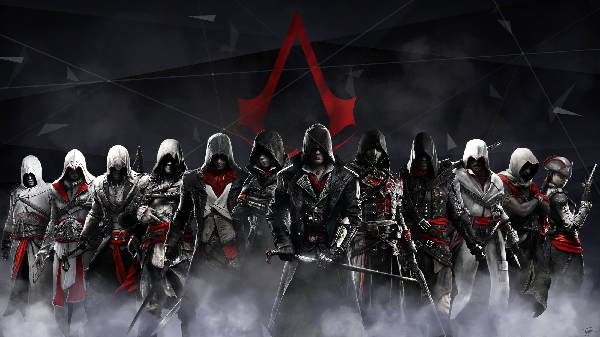

Beranda

Selamat datang di Brotherhood. Selama berabad-abad, para Assassin telah berjuang dari dalam bayang-bayang demi melindungi kebebasan umat manusia dari cengkeraman Templar. Dari jalanan berdebu di Masyaf hingga kemegahan era Renaissance, setiap kepingan sejarah menyimpan kisah perjuangan yang tak terlupakan.
Di halaman ini, Anda akan menyelami jejak langkah para Master Assassin yang ikonik, mengetahui kisah serta perjuangan mereka, pelajari sejarahnya, dan ingatlah selalu kredo kita: "Nothing is true, everything is permitted." Kita bekerja di kegelapan untuk melayani cahaya.
Sebutan Terhormat: Altaïr Ibn-La'Ahad, Tokoh Legendaris yang mereformasi kredo Brotherhood dan Seorang Mentor dari Levant Brotherhood (Masyaf)
.jpeg)
Sejarah singkat perjalanan Altaïr dari kejatuhannya hingga bagaimana ia merombak wajah Brotherhood selamanya
- Masa Keemasan, Keangkuhan, dan Kejatuhan
- "Stay your blade from the flesh of an innocent" (Jangan melukai orang yang tidak bersalah): Altaïr membunuh seorang kakek tua tak bersenjata di dalam kuil hanya karena orang tersebut berada di jalannya.
- "Hide in plain sight" (Bersembunyilah di depan mata): Alih-alih mengendap-endap dan membunuh secara diam-diam, Altaïr dengan arogan menampakkan diri dan menyerang Robert de Sablé secara terang-terangan. Serangannya gagal total.
- "Never compromise the Brotherhood" (Jangan pernah membahayakan Brotherhood): Kegagalan dan kearoganannya di kuil memicu Robert de Sablé dan pasukan Templar untuk melacaknya hingga ke Masyaf (markas besar Assassin), yang berujung pada pengepungan dan kematian banyak Assassin.
- Perjalanan Penebusan Dosa
- Menjadi Mentor dan Reformasi Brotherhood
- Menghapus Syarat Potong Jari: Altaïr mendesain ulang Hidden Blade sehingga senjata itu tidak lagi mengharuskan penggunanya memotong jari manis. Ini membuat para Assassin lebih mudah menyamar karena tangan mereka utuh.
- Desentralisasi Brotherhood: Menyadari bahwa benteng seperti Masyaf membuat Assassin menjadi target yang mudah dihancurkan, Altaïr memerintahkan para Assassin untuk menyebar ke seluruh penjuru dunia (Eropa, Asia, Afrika). Mereka membangun markas-markas rahasia (Bureaus) dan mulai beroperasi sepenuhnya dari dalam bayang-bayang.
- Mengizinkan Pernikahan: Ia menghapus aturan yang melarang Assassin memiliki keluarga, karena ia sendiri menikah dengan mantan Templar, Maria Thorpe. Ia percaya cinta dan keluarga justru memberi Assassin alasan yang lebih kuat untuk bertarung.
- Pemahaman Filosofis: Altaïr mengubah pendekatan Brotherhood dari yang awalnya kepatuhan buta (seperti era Al Mualim) menjadi pencarian ilmu dan pemahaman. Ia mengajarkan bahwa kredo "Nothing is true, everything is permitted" bukanlah izin untuk berbuat seenaknya, melainkan sebuah observasi tentang sifat dasar realitas yang menuntut kebijaksanaan dari setiap Assassin.
Pada usia yang masih sangat muda (24 tahun), Altaïr telah mencapai pangkat tertinggi, yaitu Master Assassin. Kemampuannya yang luar biasa membuatnya menjadi sombong, gegabah, dan merasa dirinya di atas hukum Brotherhood. Puncak keangkuhannya terjadi pada tahun 1191 dalam misi di Kuil Salomo (Solomon's Temple) saat mencoba merebut Apple of Eden dari Templar, Robert de Sablé. Di sana, Altaïr dengan sengaja melanggar 3 Prinsip Utama (Tenets) Assassin secara berurutan:
Akibat pelanggaran berat ini, Mentornya, Al Mualim, mencabut pangkat dan senjata Altaïr, menurunkannya kembali menjadi seorang Novice (Pemula).
Untuk mendapatkan kembali pangkat dan kehormatannya, Al Mualim menugaskan Altaïr memburu sembilan target utama Templar di Tanah Suci.
Sepanjang perjalanan ini, Altaïr mulai berubah. Setiap kali ia membunuh targetnya dan mendengarkan
kata-kata terakhir mereka di White Room, Altaïr mulai memahami motivasi musuhnya dan menyadari bahwa
dunia tidak hanya hitam dan putih. Ia belajar tentang kerendahan hati, kebijaksanaan, dan makna
sebenarnya dari Creed (Kredo).
Puncaknya, ia menemukan fakta mengejutkan: Mentornya sendiri, Al Mualim, adalah seorang pengkhianat
yang bekerja sama dengan Templar untuk menguasai Apple of Eden. Altaïr terpaksa membunuh sosok ayah
angkatnya tersebut demi menyelamatkan kebebasan umat manusia.
Setelah mengalahkan Al Mualim, Altaïr naik menjadi Mentor Brotherhood. Ia tidak menghancurkan
Apple of Eden, melainkan mempelajarinya dengan penuh kehati-hatian. Dari artefak Isu tersebut,
ia mendapatkan pengetahuan luar biasa yang ia tuangkan ke dalam jurnal legendarisnya, Codex.
Dengan pengetahuan baru dan kebijaksanaannya, Altaïr menyadari bahwa tradisi lama akan membawa
Brotherhood pada kepunahan. Ia pun melakukan reformasi besar-besaran yang mengubah cara kerja Assassin selamanya:
Warisan dan Codex peninggalan Altaïr inilah yang ratusan tahun kemudian ditemukan oleh Ezio Auditore di Italia, yang membantu Ezio membangun kembali Brotherhood dan mengalahkan Borgia. Altaïr bukan hanya seorang Assassins yang hebat; dia adalah arsitek yang memastikan kelangsungan hidup Assassin's Creed hingga era modern.